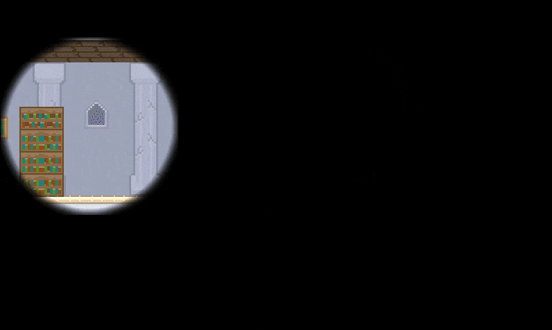

Global Game Jam 2021
In less than 48 hours, we created a 2D platformer where you try to escape from a haunted manor
using a magic flashlight coming from your mouse that magically stops ghosts from moving.
Help your avatar find the key as best as you can, but remember that you have a single flashlight that you'll need
both to find your way and to stop the ghosts from hugging you.
Our team was composed of one music composer and two software engineering students who had never used a game engine before.
We got familiar with the Godot Engine on the fly and successfully delivered our game within the time limit.
Try it here:
Download for
Linux/Windows/Mac
Hack it here:
Github repository
FASTEST VERIFIED SPEEDRUN: Simon V. (0h 0m 39.84 s)
